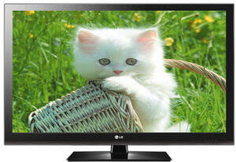
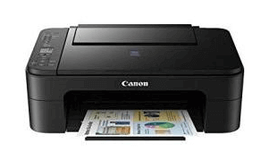
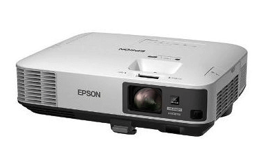

The output device displays the result of the processing of raw data that is entered in the computer through an input device. There are a number of output devices that display output in different ways such as text, images, hard copies, and audio or video.
The monitor is the display unit or screen of the computer. It is the main output device that displays the processed data or information as text, images, audio or video.
A printer produces hard copies of the processed data. It enables the user, to print images, text or any other information onto the paper.Based on the printing mechanism, the printers are of two types: Impact Printers and Non-impact Printers.
A projector is an output device that enables the user to project the output onto a large surface such as a big screen or wall. It can be connected to a computer and similar devices to project their output onto a screen. It uses light and lenses to produce magnified texts, images, and videos. So, it is an ideal output device to give presentations or to teach a large number of people.
PREVIOUS NEXT